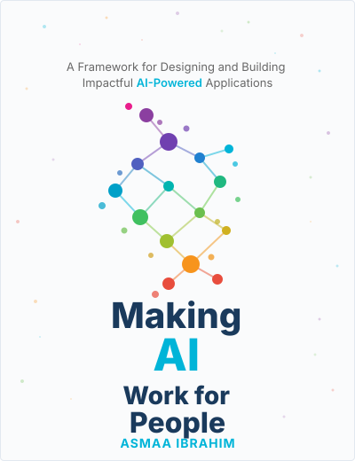

A Framework for Designing and Building Impactful AI-Powered Applications
Making AI Work for People empowers software engineers, product managers, and app designers to create AI-enabled applications that inspire trust, solve hard problems, and prioritize human needs.
Written by Asmaa Ibrahim, Senior AI Consultant at Google and leader of the Gemini in Firebase product launch, this book shows you how to harness AI's transformative potential while guaranteeing applications remain ethical, accessible, and aligned with human values.
The book demonstrates how to identify AI integration opportunities, design human-centered solutions, measure success with business-focused KPIs, and scale from MVP to production-grade systems while managing costs and infrastructure challenges.
Publisher: Wiley
ISBN: 978-1394392094

At the heart of the book is PRESS—a systematic approach ensuring AI products embody five essential principles
Strategies for building AI applications that amplify rather than replace human strengths and capabilities in real-world applications. Learn to keep genuine user needs at the center of every decision.
Embed responsible AI practices into the foundation of your development process—from data collection through deployment—rather than treating ethics as an afterthought.
Ensure your AI systems are transparent and their decisions can be understood, trusted, and audited by the people they serve and the organizations that deploy them.
Use rigorous evaluation methods and benchmarking to guarantee that AI applications meet safety standards and perform reliably before reaching end users.
Design for lasting value by managing costs, infrastructure challenges, and long-term maintenance requirements to ensure AI systems remain beneficial over time.
Practical tools and insights for every stage of AI product development
A comprehensive framework that guides every stage of AI product development from conception to deployment, built around five essential principles.
Practical strategies for human-AI collaboration that amplify rather than replace human strengths and capabilities in real-world applications.
A proven evaluation flywheel to guarantee that AI applications meet real user needs and continuously improve through feedback.
Real-world case studies from telecom and retail demonstrating successful human-first AI implementations and measurable outcomes.
Essential guidance for scaling from MVP to production-grade systems while managing costs, infrastructure challenges, and maintenance.
Learn how to identify AI integration opportunities and measure success with KPIs that reflect real business value and user satisfaction.
Available now from Wiley and major book retailers worldwide.
Buy on Amazon Wiley Online